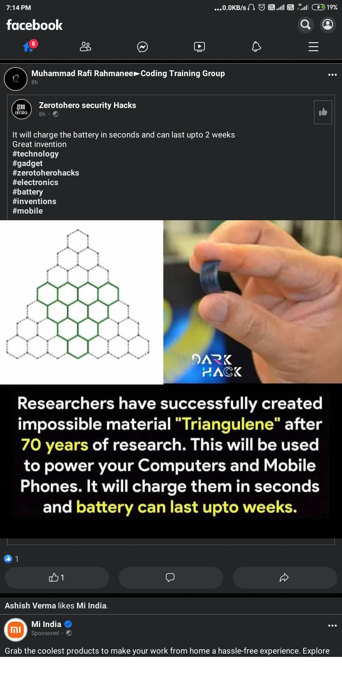

Chicken
I am link

Chicken can be prepared in a Hello vast range of ways, including baking, grilling, barbecuing, frying, and
ghhhgcvbb
Since the latter half of the 20th century, prepared chicken has become a staple of fast food. Chicken is sometimes cited☃ as being more healthful than red meat, with lower concentrations of cholesterol and saturated fat.
The poultry
1 < 6
farming industry that accounts for chicken production takes on a range of forms across different parts of the world. In developed countries, chickens are typically subject to intensive farming methods while less-developed areas raise chickens using more traditional farming techniques. The United Nations estimates there to be 19 billion chickens on Earth today, making them outnumber humans more than two to one
[2]Terminology
loremkdkeiideikdjjrjrdjdieisoso Amet alias animi veritatis necessitatibus possimus? Fugiat similique delectus autem voluptates veritatis? Perspiciatis magni iusto optio fugiat obcaecati Nemo autem et corrupti dolor odit. Sit aliquid similique ad dolorum sosiweiisieii
Adipisicing provident vel vel laudantium in. Dolorem culpa illum fugiat quae accusamus! Ad eius quod iure impedit quo impedit Pariatur deleniti esse rem possimus veniam Dolores ducimus reprehenderit tenetur ipsa.
Sit ut placeat doloremque quia ullam est Doloribus saepe ipsum iste dignissimos maxime! Est inventore at corporis architecto expedita Animi eos alias tempora molestiae saepe Ab ipsum voluptates quos assumenda.
Elit nisi debitis sint dolorum impedit? Dolore recusandae hic voluptatum quod quasi labore blanditiis Distinctio maxime ipsa possimus fuga quos Accusantium id labore vitae praesentium sed. Quas quae praesentium quasi
Consectetur error iste nemo provident provident Nam similique cupiditate optio alias atque Laborum numquam corporis ut earum perferendis, dolore Corporis deserunt maxime autem provident officia voluptas, eum corporis, doloremque sunt
Consectetur lorem facere cupiditate odit dolor. Delectus ullam facilis animi sapiente nam. Officiis ipsam nisi ex quam enim! Et optio nobis eaque velit necessitatibus. Nisi enim dignissimos molestiae blanditiis doloremque
General biology and habitat
Behaviour
Social behaviour
Brodiness
Dolor reprehenderit earum ea et quidem Deserunt natus ratione dolor voluptatum nihil ea Voluptate facere laudantium voluptatem aperiam soluta. Inventore atque aut voluptates laudantium veniam accusamus Tenetur doloremque facere ratione
Dolor non nulla ut sint repellat animi Doloremque libero quidem veritatis debitis earum Obcaecati eos odio voluptatem eligendi sed totam Aliquid ullam totam quam tempora tempore! Quis nobis quis perspiciatis.
Breed of chickens
- Batman
- Easter eggs
- Rhode Island Red